Saúde Perto
Tecnologia para aproximar o cidadão do
atendimento nos postos de saúde
UNIFORTCC · Ciência da Computação · 2026
Tecnologia para aproximar o cidadão do
atendimento nos postos de saúde
O posto de saúde é a principal porta de entrada do SUS, acolhendo a população perto de casa e garantindo o cuidado contínuo na atenção básica.
Escuta, triagem e atendimento com médicos e enfermeiros.
Prontuário, prescrições e cuidado de condições crônicas.
Dispensação gratuita dos medicamentos prescritos na própria unidade.
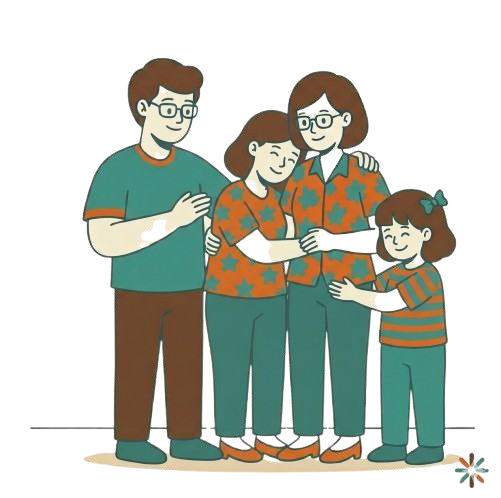
A jornada fragmentada atinge o cidadão, a equipe de
saúde e a gestão das unidades.
Filas, espera sem previsibilidade e dúvida sobre onde encontrar o medicamento prescrito.
Prontuários e receitas em papel, informações dispersas e retrabalho constante.
Pouco controle do estoque, dificuldade de acompanhamento e baixa geração de dados.
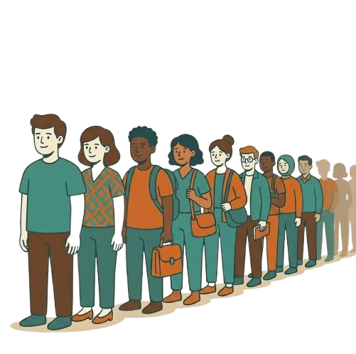
O Saúde Perto é uma solução digital criada para conectar toda a jornada do cidadão no posto de saúde: do agendamento ao medicamento, de forma ágil, organizada e acessível.
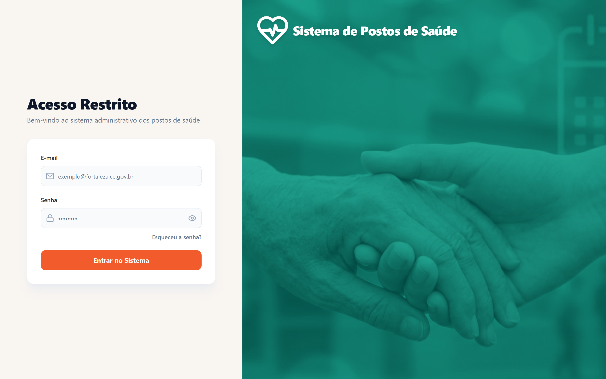
Tecnologia escolhida para crescer com o sistema.
Regras de negócio, segurança, APIs e integridade dos dados.
Interface modular e responsiva.
Servidor-base do MVP: US$ 39/mês.
Ex.: GPT-5 mini como referência de custo.
Cada tecnologia resolve uma responsabilidade específica.
Agente de IA · Arquitetura conversacional do cidadão
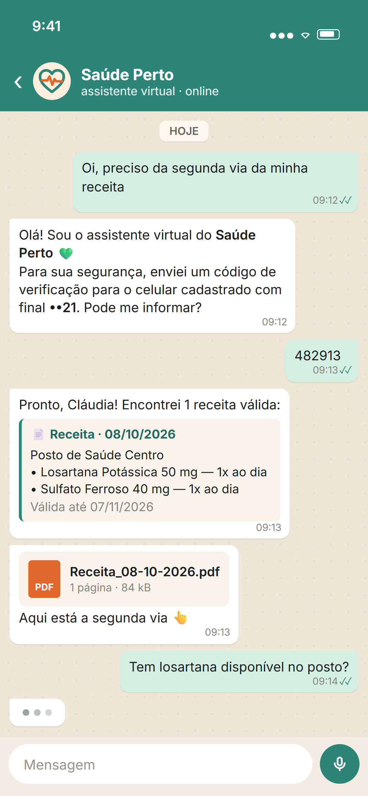

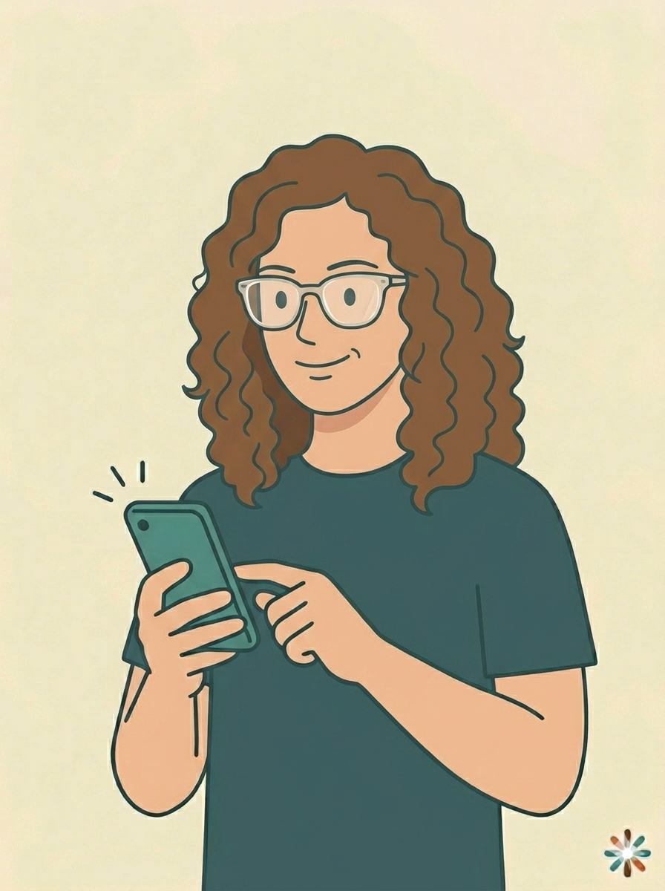
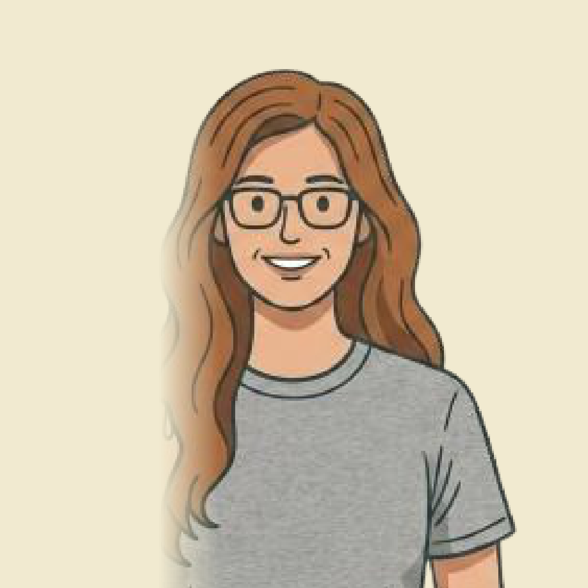
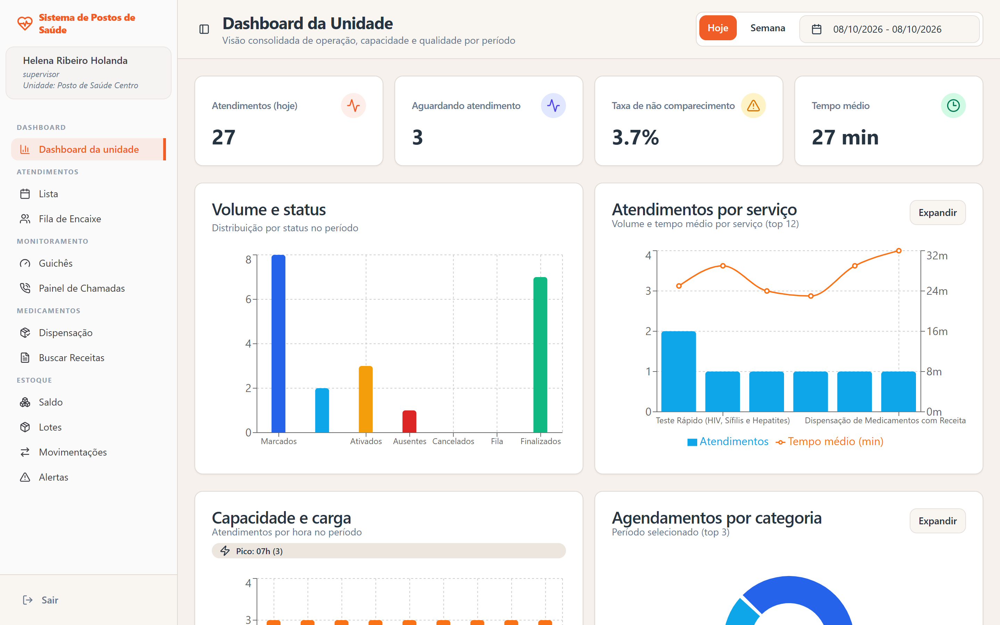
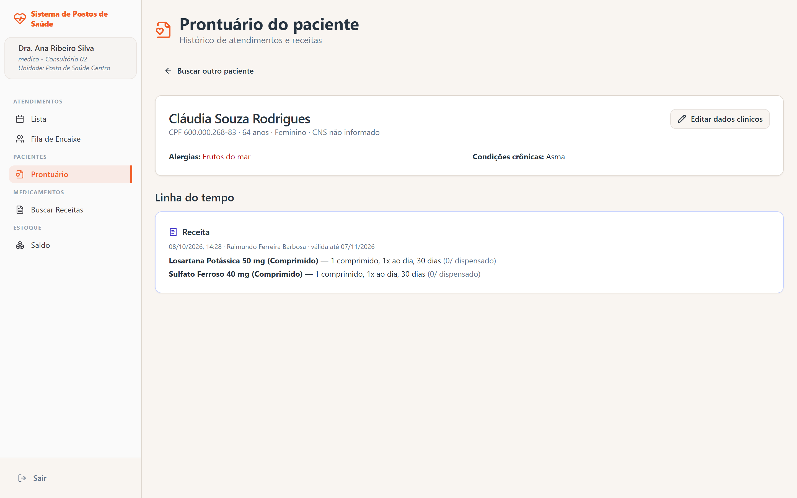
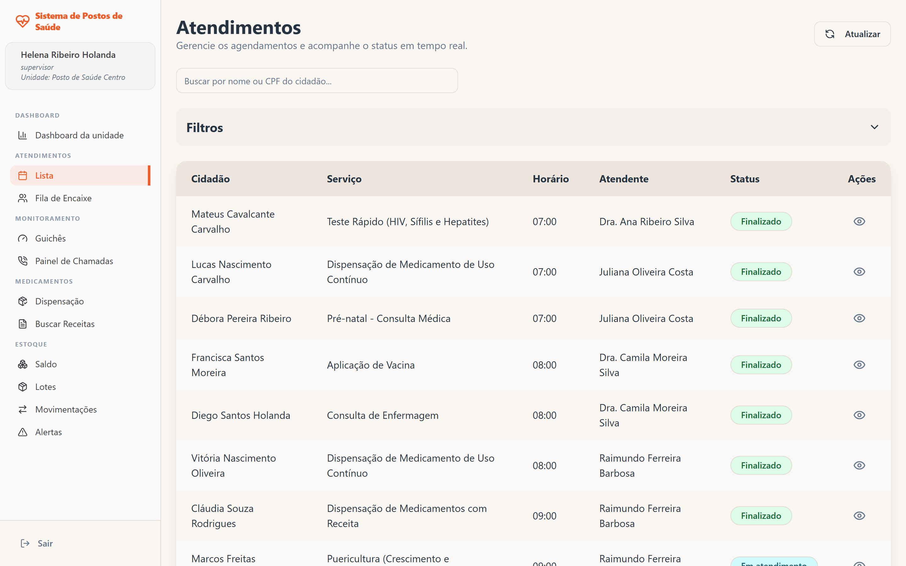
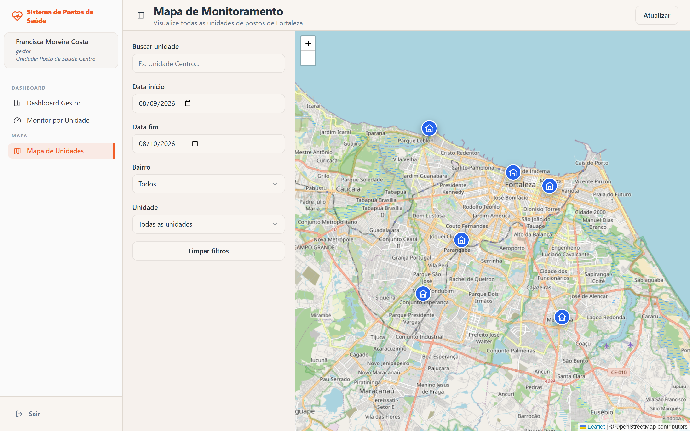
Agendamento pela recepção ou pela fila de encaixe.
A recepção confirma a chegada e o atendimento passa para “Aguardando”.
O paciente acompanha a chamada do seu nome no painel da unidade.
O profissional atende, registra o prontuário e emite a receita.
A farmácia dispensa o medicamento, dando baixa automática no estoque.
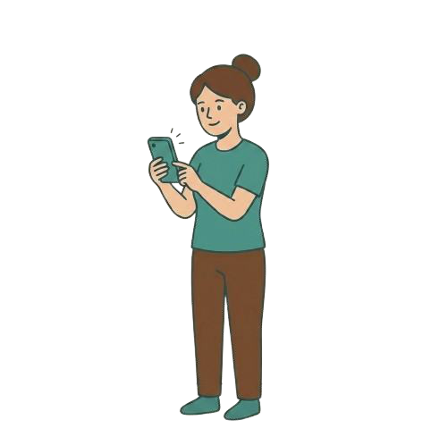
A receita emitida na consulta segue direto para a dispensação, que consulta o estoque da unidade.
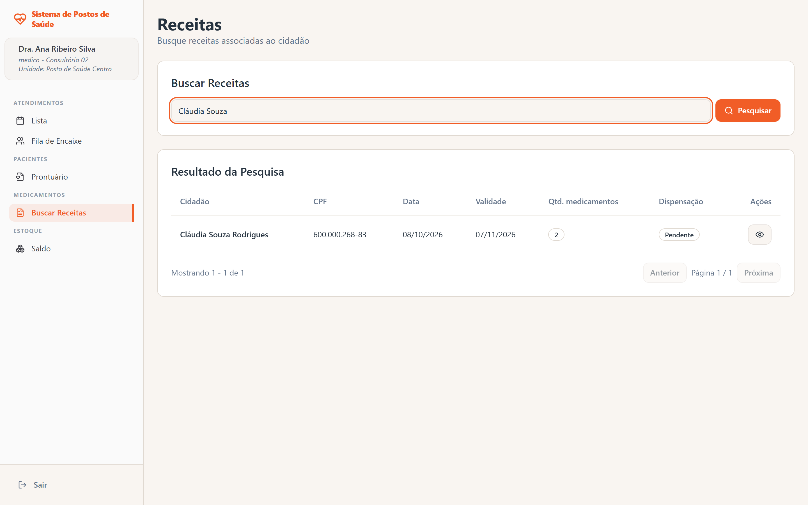
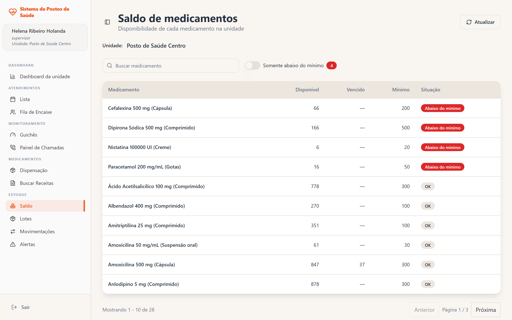
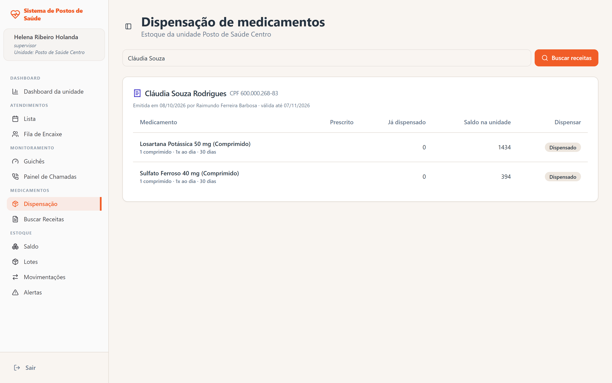
Visão clara da fila, dos atendimentos e do estoque de cada unidade.
Prontuário, receitas e medicamentos centralizados em uma só base.
Atendimentos e dispensações mais rápidos, com menos retrabalho.
Dashboards e mapa para monitorar fluxo, histórico e desempenho.
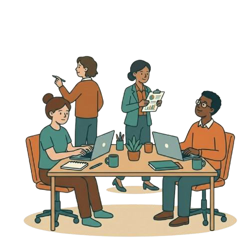
Hetzner para aplicação, API, banco e serviços do MVP.
Estimativa para uso inicial com modelo de baixo custo, variando conforme volume de conversas e tokens.
Custo variável conforme volume e categoria das mensagens.
Reserva para operação, segurança e continuidade.
Implantar o Saúde Perto em um posto, acompanhar o uso real e medir fluxo, adesão e operação da equipe.
Disponibilizar o atendimento por IA no WhatsApp para agendar, cancelar, consultar receitas e verificar medicamentos.
Expandir a plataforma para múltiplas unidades, mantendo uma única base de dados, gestão centralizada e canais integrados.
Ao unir tecnologia e saúde pública, o Saúde Perto conecta o cidadão do agendamento ao medicamento e gera mais eficiência para os postos de saúde.
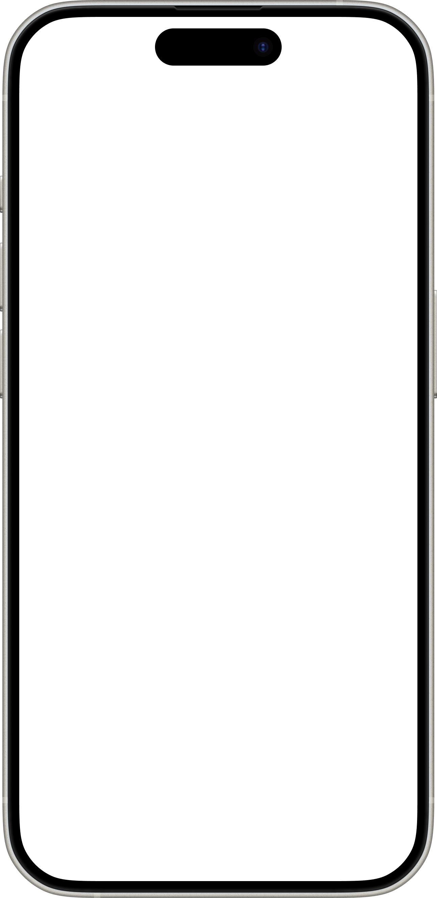